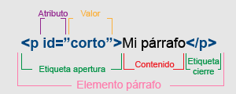

TEORÍA 03 : Estructuras condicionales simples. |
EXPLICACIÓN:Las estructuras condicionales hacen lo que su nombre indica. Hay varias condicionales y son: IF
|
EJEMPLO:Ejemplo de IF:  |
|
(1) HTML : Hyper Text Markup Language (Lenguaje de marcas de Hypertexto). (2) marcas : También llamadas etiquetas. (3) W3C : WWW Consortium (Consorcio WWW). |
IAD